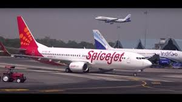
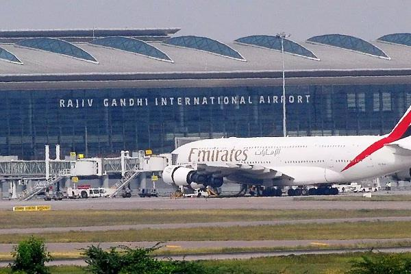
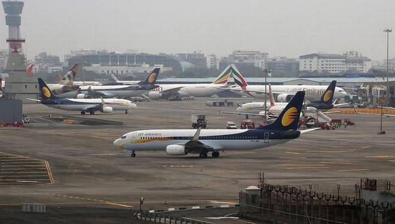
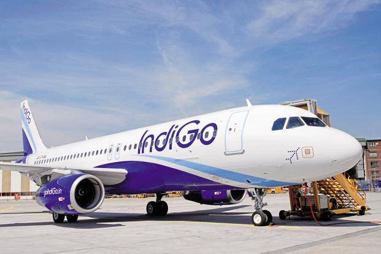
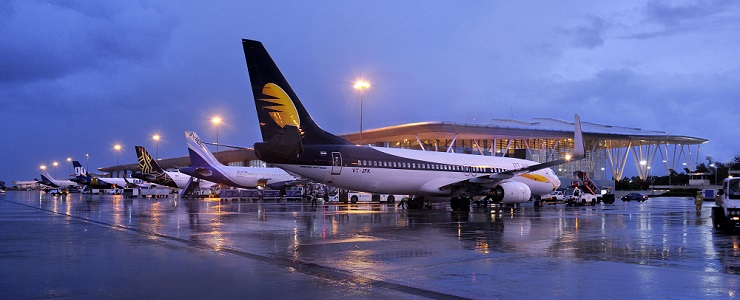

India is a vast South Asian country with diverse terrain – from Himalayan peaks to Indian Ocean coastline – and history reaching back 5 millennia. In the north, Mughal Empire landmarks include Delhi’s Red Fort complex and massive Jama Masjid mosque, plus Agra’s iconic Taj Mahal mausoleum. Pilgrims bathe in the Ganges in Varanasi, and Rishikesh is a yoga centre and base for Himalayan trekking. India is a country in South Asia. It is the seventh-largest country by area, the second-most populous country, and the most populous democracy in the world. It is a developing country.

Indira Gandhi International Airport serves as the major international aviation hub of the Indian capital city of New Delhi as well as India. The airport,
spread over an area of 5,106 acres (2,066 ha), is situated in Palam, 15 km (9.3 mi) south-west of the New Delhi railway station and 16 km (9.9 mi) from
New Delhi city centre. Named after former Prime Minister of India Indira Gandhi, it is the busiest airport in India in terms of passenger traffic since
2009. It is also the busiest airport in the country in terms of cargo traffic, overtaking Mumbai during late 2015. The airport was operated by the Indian Air Force before its management was transferred to the Airports Authority of India. In May 2006, the management of the airport was passed over to Delhi International Airport Limited (DIAL), a consortium led by the GMR Group. In September 2008, the airport inaugurated a 4,430 m (14,530 ft) runway.
 Rajiv Gandhi International Airport is an international airport that serves Hyderabad, the capital of the Indian state of Telangana. It is located in Shamshabad, about 24 kilometres (15 mi) south of Hyderabad. It was opened on 23 March 2008 to replace Begumpet Airport. It is named after Rajiv Gandhi, former Prime Minister of India. The airport has one passenger terminal, a cargo terminal and two runways. There are also aviation training facilities, a fuel farm, a solar power plant and two MRO facilities. RGIA was originally scheduled to open to commercial operations on 16 March 2008; however, the date was delayed due to protests from some airlines over the high ground handling rates at the airport. Once the rates were reduced, the launch date was set for 23 March 2008. In September 2011, SpiceJet launched its regional hub at RGIA, using its new Bombardier Q400 aircraft. The airline, which chose Hyderabad due to its central location in the country.
 Chhatrapati Shivaji Maharaj International Airport, Mumbai , formerly known as Sahar International Airport, is the primary international airport serving the Mumbai Metropolitan Area, India. It is the second busiest airport in the country in terms of total and international passenger traffic after Delhi, and was the 14th busiest airport in Asia and 28th busiest airport in the world by passenger traffic in calendar year 2017. Its passenger traffic was about 49.8 million in year 2018. The airport is the second busiest in the country in terms of cargo traffic also. The airport is operated by Mumbai International Airport Limited (MIAL), a Joint Venture between the Airports Authority of India and the GVK Industries Ltd led consortium which was appointed in February 2006 to carry out the modernisation of the Airport. The new integrated terminal T2 was inaugurated on 10 January 2014 and opened for international operations on 12 February 2014.
 Chennai International Airport is an international airport serving the city of Chennai, Tamil Nadu, India and its metropolitan area. It is located in Meenambakkam and Tirusulam, 21 km (13 mi) from the city centre. The airport handled over 22.5 million passengers in the fiscal year 2018-19, with over 570 aircraft movements and 30,000 passengers per day. Chennai International Airport is the third busiest in international traffic and cargo capacity in the country behind New Delhi and Mumbai. It is the fourth busiest airport in country's overall passenger traffic behind New Delhi, Mumbai and Bangalore. The domestic and the international terminals are named after former chief ministers of Tamil Nadu K. Kamaraj and C. N. Annadurai, respectively. It was the first airport in India to have international and domestic terminals located adjacent to each other.
 Kempegowda International Airport is an international airport serving Bangalore, the capital of the Indian state of Karnataka. Spread over 4,000 acres (1,600 ha), it is located about 40 kilometres (25 mi) north of the city near the village of Devanahalli. It is owned and operated by Bengaluru International Airport Limited (BIAL), a public–private consortium. The airport opened in May 2008 as an alternative to increased congestion at HAL Airport, the original primary commercial airport serving the city. The airport consists of a single runway and passenger terminal, which handles both domestic and international operations. A second runway, being constructed by Larsen & Toubro is expected to be operational by December 2019 while a second terminal is in the early stages of construction. The airport serves as a hub for AirAsia India, Alliance Air, and IndiGo and a focus city for Air India and SpiceJet.